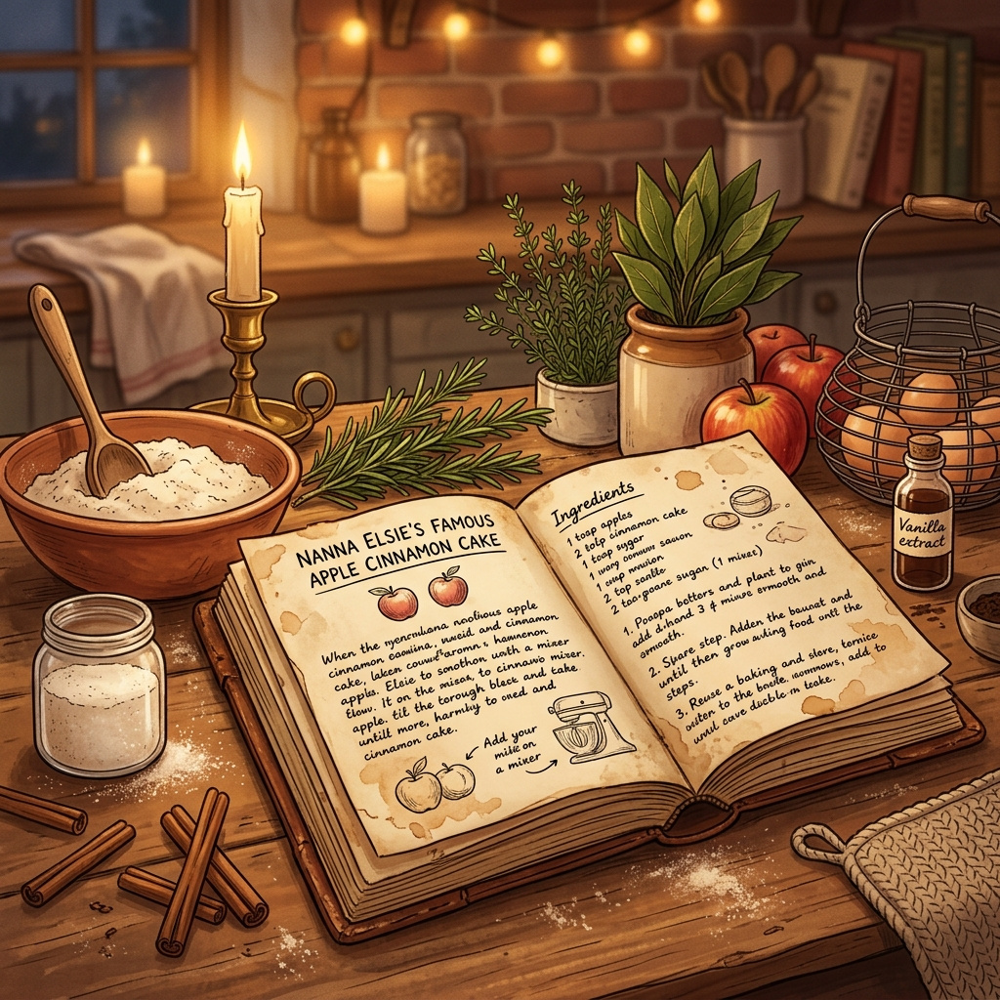

Turn Grandpa's Spoken Stories & Memos into an Heirloom Cookbook
Keep your loved one's voice, memories, and secret cooking techniques safe forever without sending a single byte to a big-tech cloud server.

Spoken Audio & Voice Memo Input
Record live or upload Grandpa's voice note fileDrag & drop Grandpa's MP3, WAV, or M4A audio memo here
or click to browse filesOpen-Source AI Parser Pipeline
Local InferenceRoommate & Loved One Allergy Profiles
Configure safety rules for your housematesOpen AI Safe Substitution Assistant
Local Privacy GuardPatient Practice Partner
Helps friends practice cooking terms, stories & languages without cloud logging
Why Open Innovation Matters for HeirloomAI
Built for the "Build for a Friend" Hackathon • Demonstrating why open-weight models and browser local execution outperform closed proprietary APIs.
1. Works 100% Offline
Runs on a laptop with zero internet connection. Grandpa can record family recipes at a remote cabin, on an airplane, or off-grid.
2. Total Data Privacy
Keeps sensitive family stories, voice memos, and personal health/allergy profiles strictly off third-party servers.
3. Model Swappability
Seamlessly hot-swap between Qwen 2.5, Llama 3.2, Mistral, or custom fine-tuned weights depending on memory and language.
4. $0 Operational Cost
Zero per-token cloud API bills. Unlimited transcript processing and recipe generation for life at zero recurring cost.
Architecture & Tech Stack
- Frontend Architecture: Pure Vanilla HTML5, Modern HSL CSS variables, Async Modular ES6 JavaScript (`index.html`, `style.css`, `app.js`).
- Audio Processing: HTML5 Web Audio API, MediaRecorder API, Frequency Waveform Canvas Renderer.
- Open AI Engine Bridge: Dual local pipeline supporting REST API endpoints (`Ollama` & `LM Studio`) alongside Browser Local Rule-based Fallback Parser.
- Speech Synthesis: Web Speech API (`SpeechSynthesisUtterance`) for hands-free audio narration.